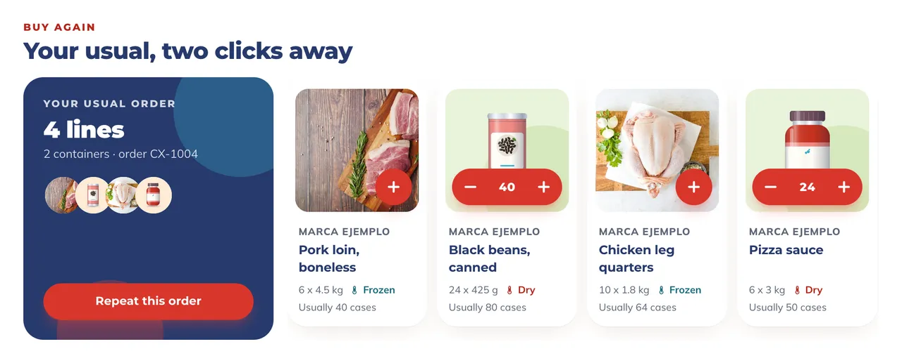
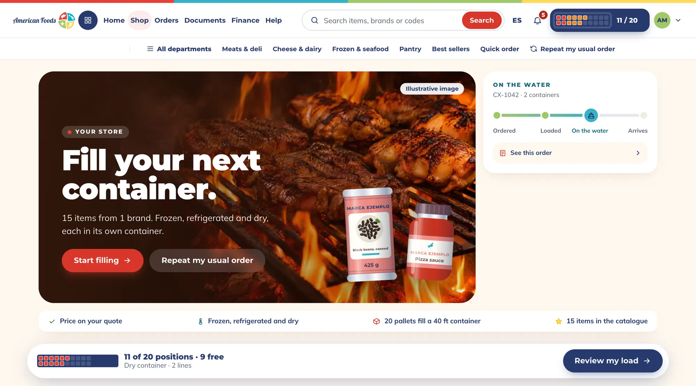
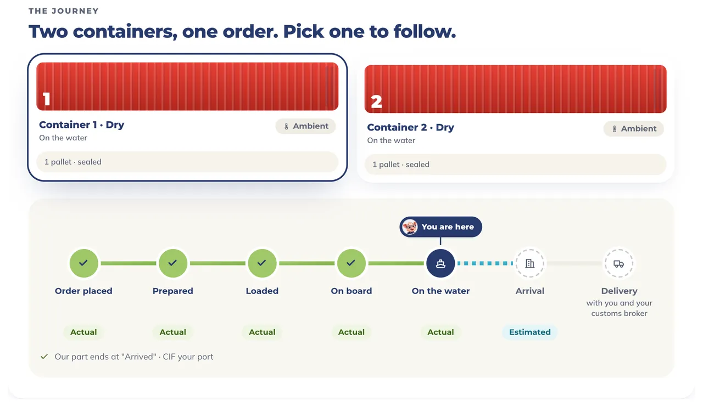
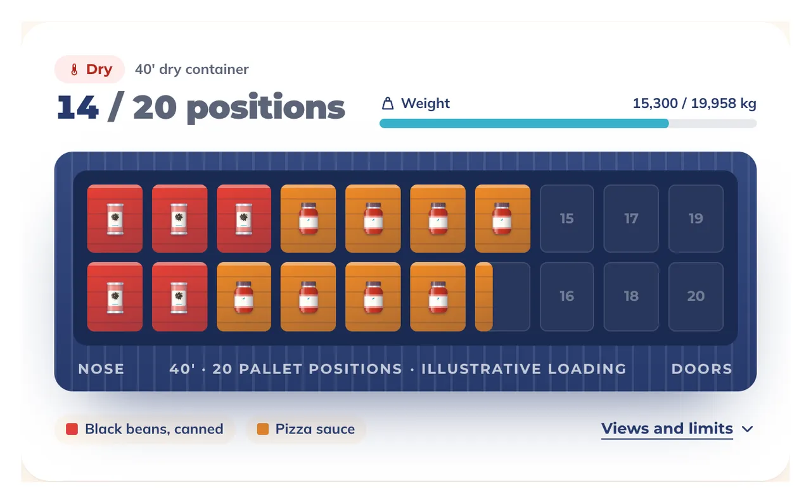
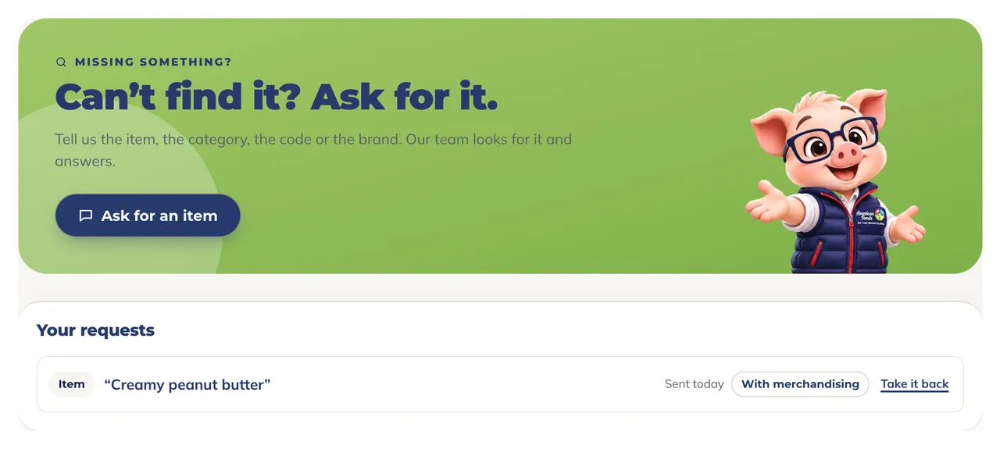
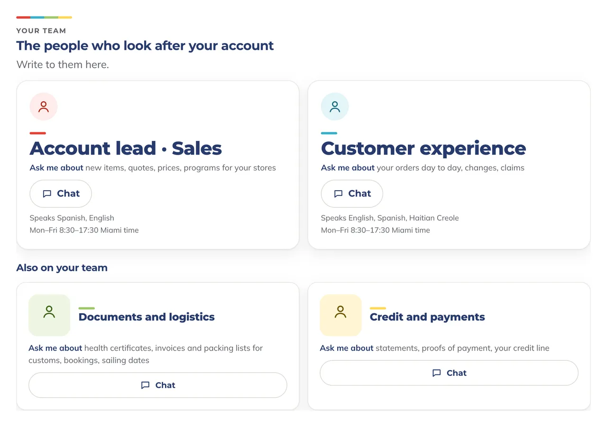
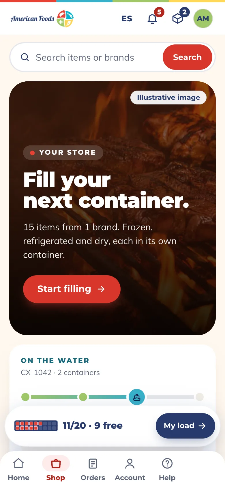
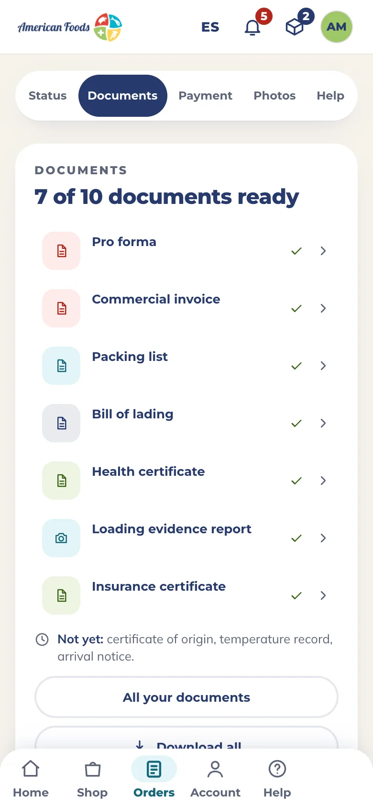

Your usual order
Repeat your usual order in two clicks.
Start from your usual order and change only what is different this time.

The American Foods portal puts the catalog, your load, your orders and your documents in one place, in English and Spanish, on a computer or a phone. Retail and distribution partners use it to order ami and the rest of the American Foods range.
Your American Foods account manager sets up your access. One sign-in works from amianytime.com and afoodsinc.com.

Browse the aisles or search by item, brand or code, ami included. Each pallet you add takes its place in the container, and you see how many positions are still free.
Start from your usual order and change only what is different this time.

See every container stage by stage: prepared, loaded, on board, on the water, arrived.

Add products and see how many positions are still free before you confirm the load.

Tell us the item, category, code or brand. Our team looks for it and answers, and your request stays on your list.

See who looks after your account by role: sales, customer experience, documents and logistics, credit and payments.

Open the portal in your phone’s browser: the same store, the same load, the same orders and documents, with the loading photos on each order’s own page.
Sample data shown


Panchito is the portal’s assistant. Ask him from any page.
Tell us about your business. If you already buy from American Foods, go to step two.
Access is set up customer by customer, for the people on your team who need it.
One sign-in for both sites, on a computer or a phone, in English or Spanish.
Sign in once with your work email. It is the same American Foods account on amianytime.com and afoodsinc.com.